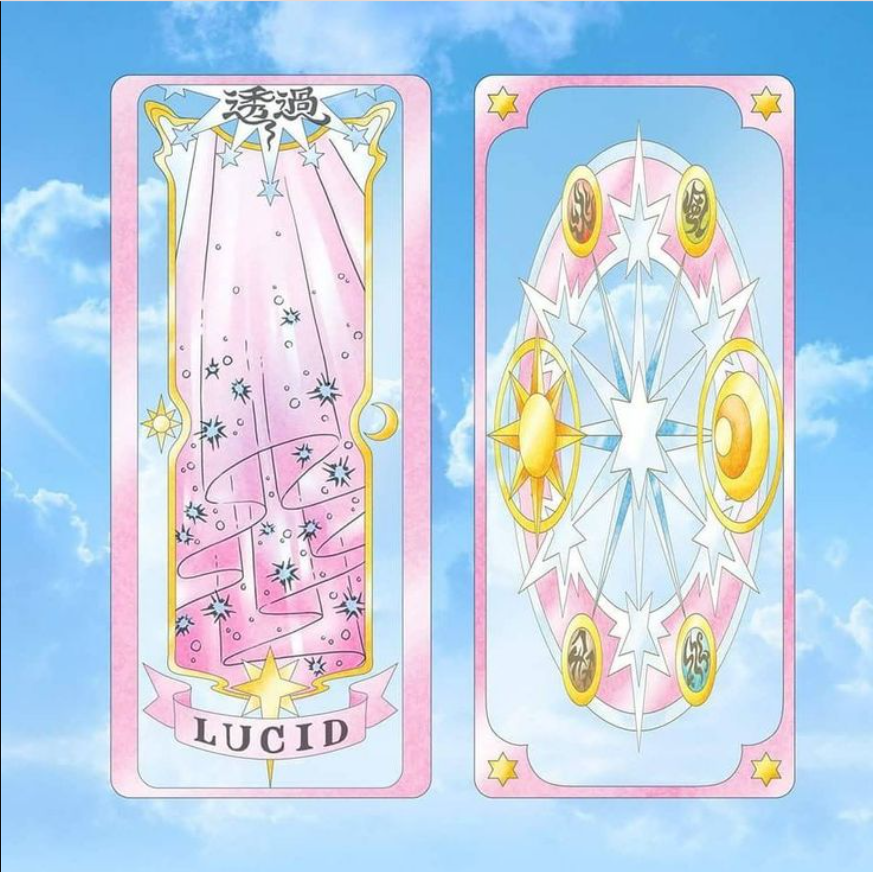

At the end of the Clear Card arc Chapter 80, as a result of Sakura's Staff of Dreams influence on them, the Sakura Cards adopted the Clear Cards's appearance and receive 6 pointed-star symbol in their transformed form. The Clear Cards are new cards that started to appear after the Sakura Cards had turned blank and clear. It was revealed, in Chapter 23, that new cards were created by Sakura herself without realizing it, due to the growth of her magical powers. Unlike either the Clow Cards or Sakura Cards, they do not begin with "The" before the name of the card. In addition, the Clear Cards have two kanji in their Chinese/Japanese name, as opposed to one in the Clow Cards and Sakura Cards (with the exception of The Hope, which also has two kanji).

These cards have a transparent background with distinct front and back images, framed by gold sun‑and‑moon motifs and a seven‑pointed star. The front mirrors the Clow/Sakura layout with a central illustration, a star‑crowned title symbol above, and a ribboned name below set over a layered star emblem.